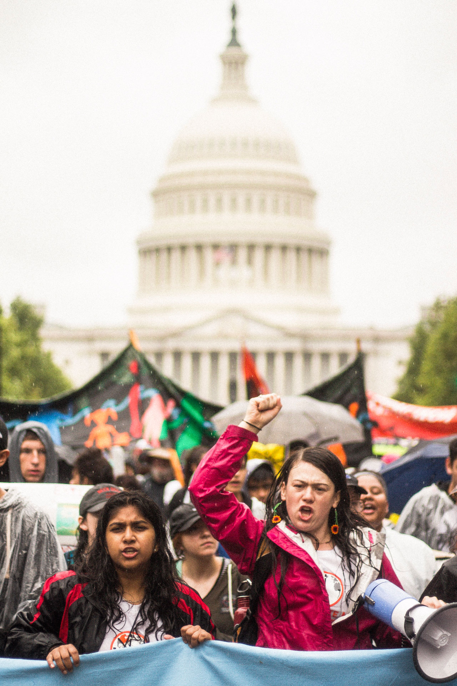

Through this campaign, Zero Hour will educate communities around the country and abroad about the systems of oppression that Zero Hour names as root causes of climate change in our platform, including Capitalism, Racism, Sexism, Colonialism, and how these systems intersect with the climate movement to form climate justice. This, in turn, will boost public opinion for the newly proposed Green New Deal in U.S. congress, which focuses on creating equity for marginalized communities while making a Just Transition towards a renewable economy. We will spread this message by recruiting ambassadors to give a presentation in their communities at local schools, recreation centers, or anywhere else where young people congregate. We hope that this will bring more people into the climate movement and give listeners a starting point to begin taking action on climate change.
Here’s where you come in. This movement can only happen if you get involved, so you can email volunteer@thisiszerohour.org to receive the ambassador application information, so that you can help us make change in the U.S. and around the world.
Don’t want to commit to presenting? No problem! We’ll be posting a map of all of the presentation locations soon so that you can attend a presentation near you.
#GetToTheRoots
Zero Hour is not mobilizing just for the sake of mobilizing. We the youth are demanding an end to business as usual on climate change, so we created science-backed demands for both our leaders, and the general public to take action on. On July 19th, over 100 youth are took over Capitol Hill to deliver our demands and the No Fossil Fuel Money Pledge to our elected officials. We are giving them the exact asks that we marched for—so they have no excuse not to take action.
We have written a platform, a letter to elected officials and a set of guiding principles to make it clear what we’re standing for and why. Click here to read our platform and principles.
We prepared for our mobilization by having an art festival in DuPont Circle in Washington DC to celebrate our movement and earth through art. In any movement, it is important to have community building, because community is the best antidote to hopelessness. Through this we built our community and beautiful banners and signs for The Youth Climate March.
In Washington D.C., youth marched on the National Mall to advocate for their own rights to a safe and livable future. We will rallied and highlighted the voices and stories of youth on the frontlines of the climate crisis. Then, we flooded the streets as a demonstration of youth power and showed how #ThisIsZeroHour to act on climate change.



The national Zero Hour March took place on July 21st. Over 25 sister marches took place on the same day. Sister marches occurred across the United States and all over the world. Locations included New York City, London, Los Angeles, Butere, Kenya; West Palm Beach, Quad Cities, the Bay Area, Atlanta, Riverside, Olympia, Seattle, Las Vegas, Denver and more.
If you would like to start a sister group, contact sisters@thisiszerohour.org. This is your chance to be a leader in your community and take a stand for our generation and all those affected by climate change. We need youth all around the United States to stand up with us.